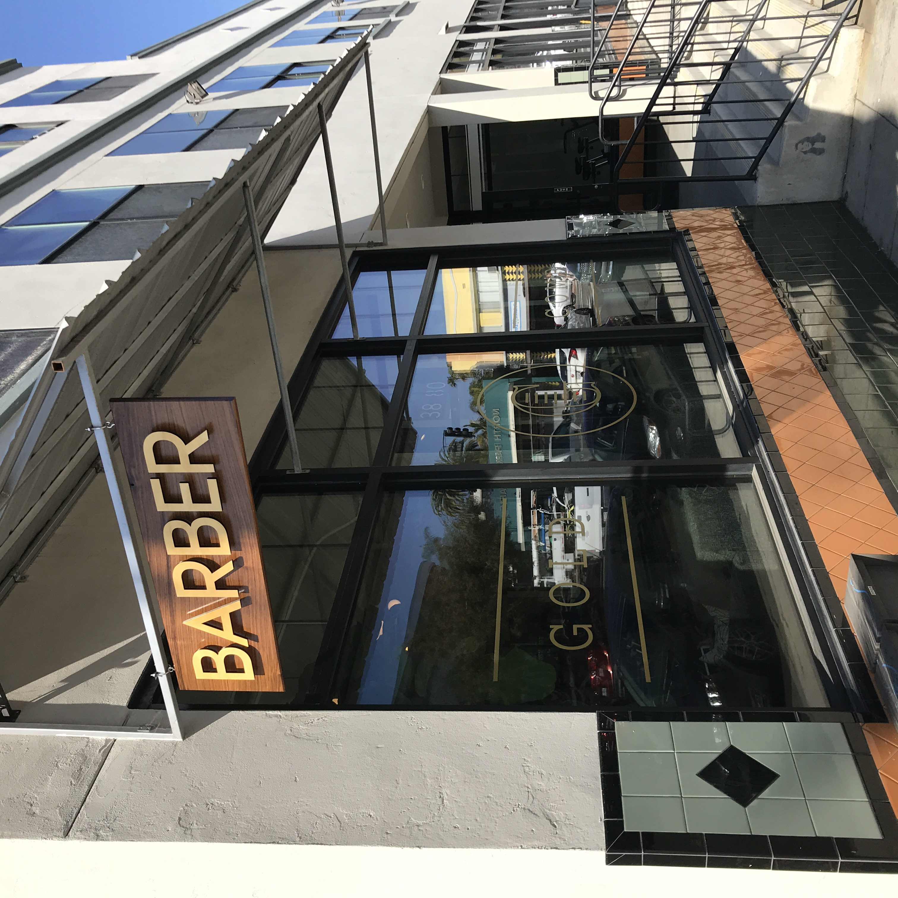
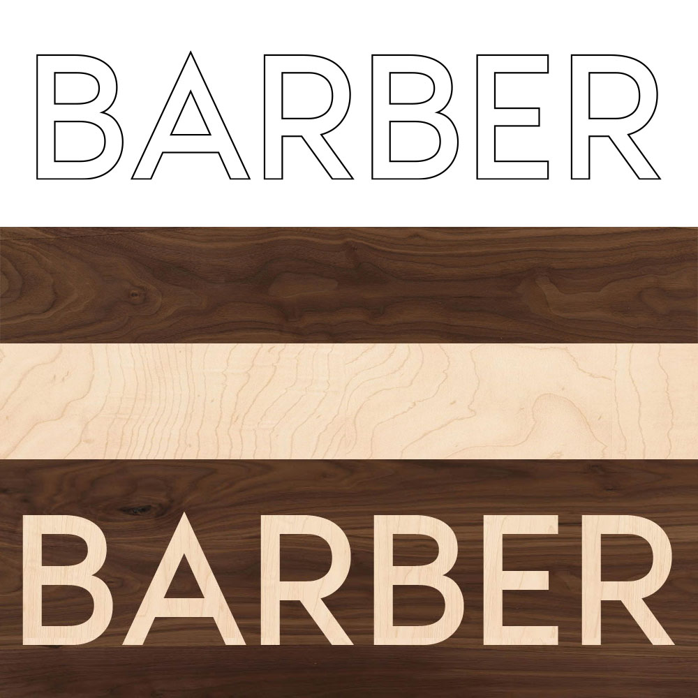
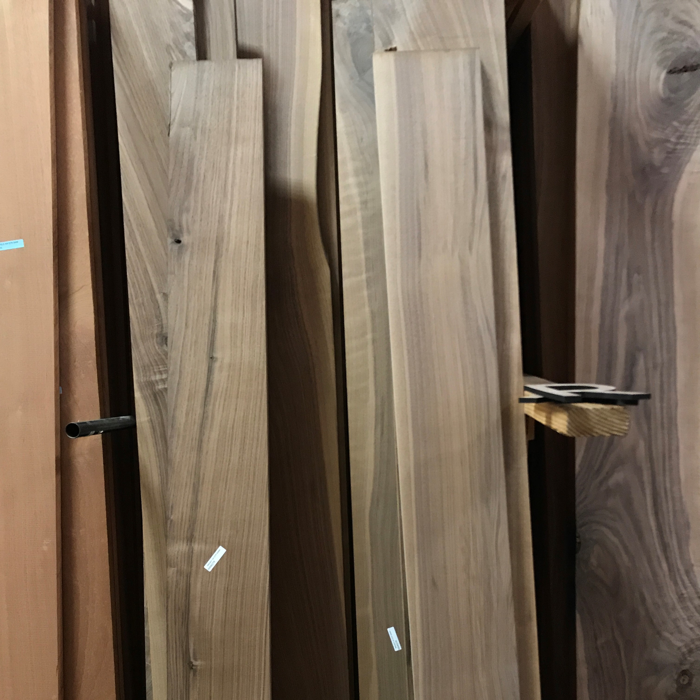
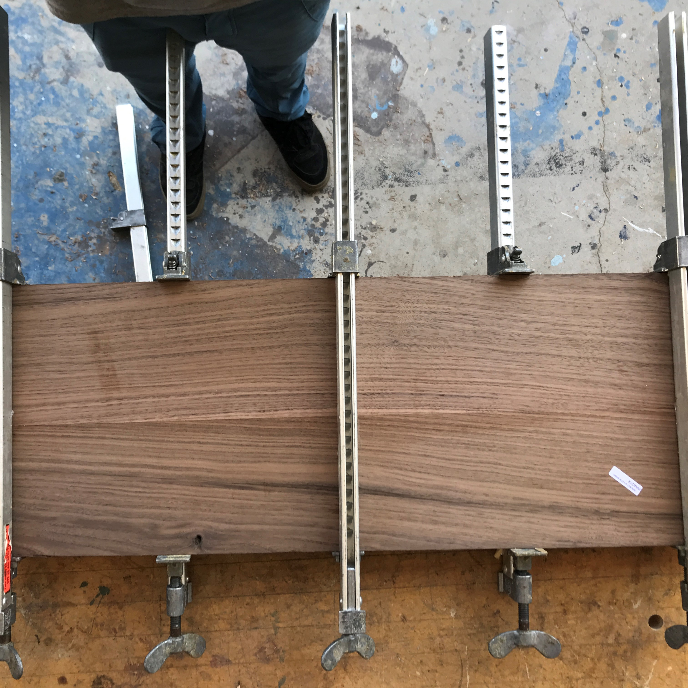
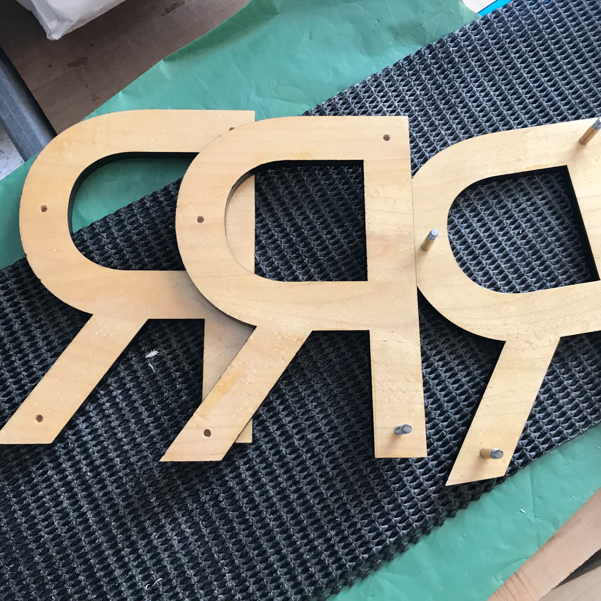
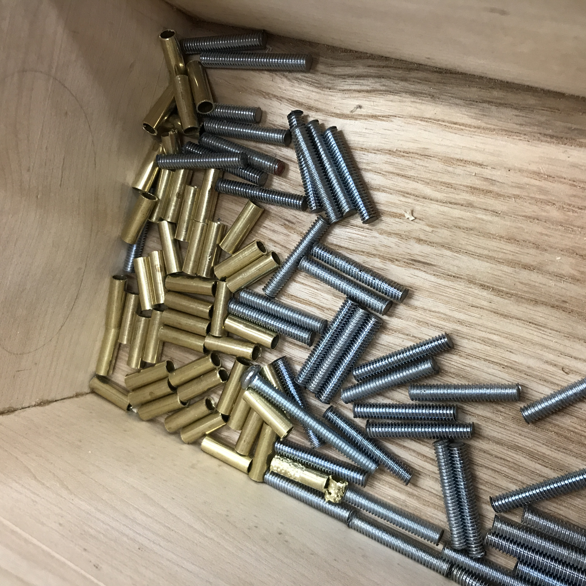
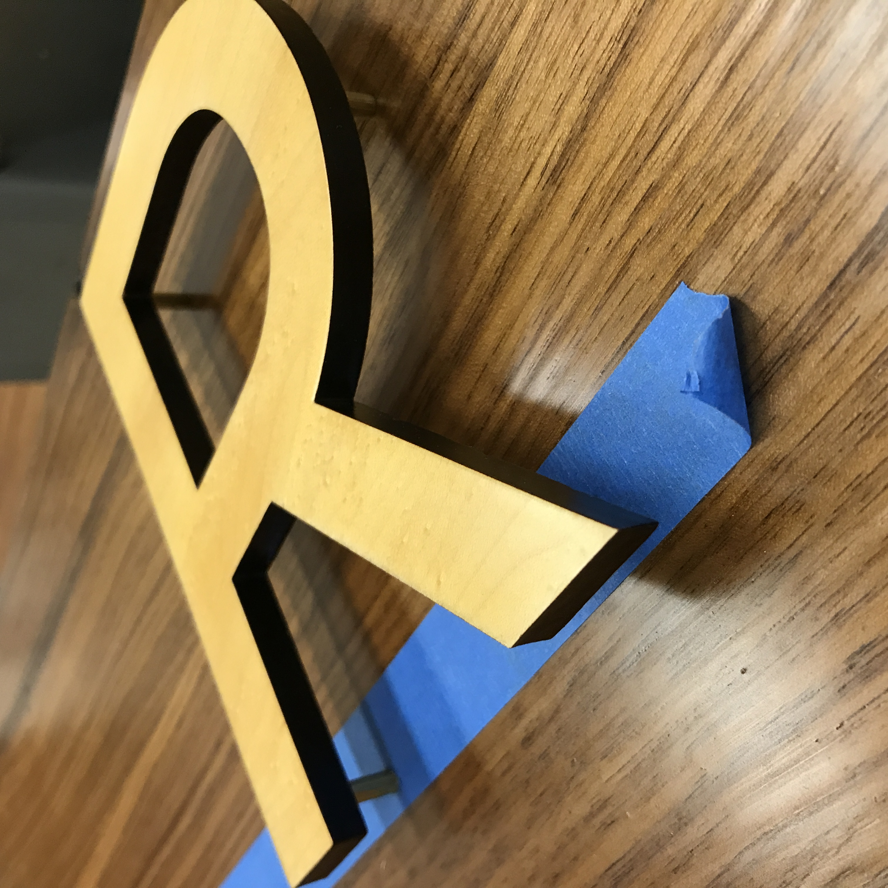

ABOUT THE PROJECT
This barber sign is my first commissioned work. The client requested a modern, yet natural looking business sign for the exterior of their establishment. The design was simple and clean, so I sketched up the design with laser-cutting in mind for precise cuts. Maple and walnut were chosen to create contrast. The standoffs were made using threaded rod and brass tubing for an elegant finish when observed closely. Walnut loses its dark tone when exposed to sunlight and spar varnish yellows over time. The gamble paid off, as the southern face of the sign has lightened and apears gilded. An apt effect, given that the barber shop is named "Gold Comb." Stay golden my friends.